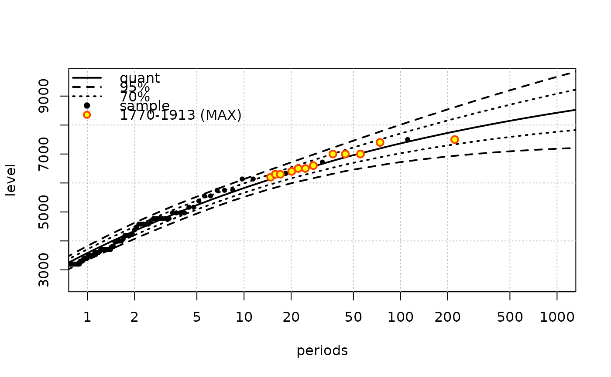

Translate a vector of coefficients from a Renewal-POT model with Pareto excesses into a vector of GEV parameters
Ren2gev.RdTranslate a vector of coefficients from a Renewal-POT model with Pareto excesses into a vector of GEV parameters.
Arguments
- object
-
A named vector of parameters or an object of class
"Renouv". In the first case, the names of the vector element must conform to the distribution given indistname.y. - threshold
-
The threshold associated with the renewal-POT model. This must be provided and be a non NA finite numeric value. It is the location parameter of the GPD.
- w
-
The duration of the blocks.
- distname.y
-
The distribution of the excesses in the renewal-POT model. This is normally a
"gpd"but can be a"lomax"or a"maxlo"distribution provided that the GEV parameters given inobjectspecify a positive or a negative shape respectively. - jacobian
-
Logical. If
TRUE, the jacobian matrix of the transformation is computed. This is only possible at the time whenwhas length 1. - vcovRen
-
A covariance matrix for the "Ren" vector of parameters. If
objecthas class"Renouv", then the covariance matrix embedded in the object is used.
Details
Given Renewal-POT parameters, it is possible to compute the distribution of block maxima. When the distribution is in the Pareto family, the marginal distribution of maxima is GEV. The location and the scale GEV parameters depend on the block duration \(w\), while the GEV shape parameter is identical to that of the GPD input distribution.
Value
When w has length 1, a named vector of GEV parameters as
the one estimated by fgev. This vector has an
elements named "loc", "scale" and "shape".
When w has length > 1, a matrix with length(w)
rows, each representing a vector of GEV parameters as before.
The returned object has attributes named "threshold". and
"distname.y" to recall how it was built.
See also
The gev2Ren function provides a reciprocal
transformation.
Examples
fit1 <- Renouv(Garonne, distname.y = "maxlo")

Ren2gev(fit1)
#> loc scale shape
#> 3583.3875802 1167.9168446 -0.1630533
#> attr(,"jacobian")
#> lambda scale shape
#> loc 492.32939 0.1313805 -164.50127607
#> scale -80.27593 0.1416313 -163.61021404
#> shape 0.00000 0.0000000 0.02658638
#> attr(,"vcov")
#> loc scale shape
#> loc 15392.775904 4185.306693 -4.699125652
#> scale 4185.306693 5573.120054 -2.901348310
#> shape -4.699126 -2.901348 0.003824851
#> attr(,"threshold")
#> [1] 2500
fit2 <- Renouv(Garonne, distname.y = "gpd")
 Ren2gev(fit2)
#> loc scale shape
#> 3582.6802262 1167.3071559 -0.1626228
#> attr(,"jacobian")
#> lambda scale shape
#> loc 492.04884 0.8059401 456.705
#> scale -80.01834 0.8689358 1008.410
#> shape 0.00000 0.0000000 1.000
#> attr(,"vcov")
#> loc scale shape
#> loc 15401.445089 4202.36991 -4.713490789
#> scale 4202.369910 5578.82193 -2.911330135
#> shape -4.713491 -2.91133 0.003837403
#> attr(,"threshold")
#> [1] 2500
Ren2gev(fit2)
#> loc scale shape
#> 3582.6802262 1167.3071559 -0.1626228
#> attr(,"jacobian")
#> lambda scale shape
#> loc 492.04884 0.8059401 456.705
#> scale -80.01834 0.8689358 1008.410
#> shape 0.00000 0.0000000 1.000
#> attr(,"vcov")
#> loc scale shape
#> loc 15401.445089 4202.36991 -4.713490789
#> scale 4202.369910 5578.82193 -2.911330135
#> shape -4.713491 -2.91133 0.003837403
#> attr(,"threshold")
#> [1] 2500